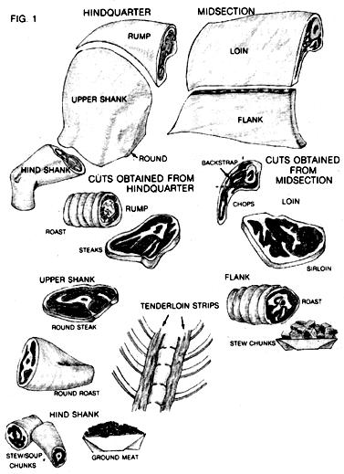
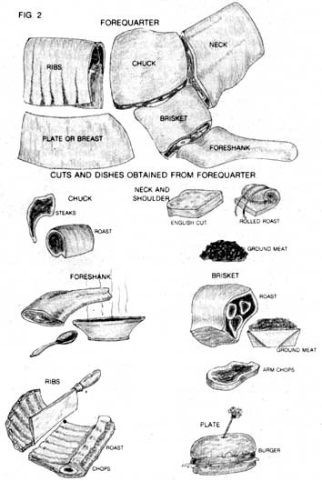

Here's a butchering technique that can help you cut an intimidating job down to size.
My first successful big-game hunt came at the age of 14. I learned then how to field-dress and skin a deer, but I wasn't quite ready to take on the formidable task of butchering such a large animal. (Besides, the Thanksgiving holiday was over by the time I got home from the hunt, and I was due to return to my duties as an eighth-grade delinquent.) So after I'd properly prepared the field-dressed carcass by removing the hide, head, and lower legs, my dad hauled it to the neighborhood butcher, who cooled it in his meat locker for a few days, then converted it into neatly wrapped and marked packages of meat . . . all for the very fair price of 3 cents a pound.
Things have changed over the quarter of a century that has elapsed since that first hunt, and these days, in the Colorado Rockies where I live, it would cost me more than ten times as much to have a deer or other biggame animal processed professionally.
So I don't.
Instead, I do it myself. Have been for several years now. And so can you. I'll tell you how . . . but first, take a few minutes to study Figs. 1 and 2 and read the accompanying brief description of professional butchering techniques. That way, you'll be in a better position to see how my somewhat unorthodox method differs from the norm.
Let me begin by drawing a couple of broad generalizations: In general, professional-style butchering involves producing cuts of meat that look like those you're used to seeing in the grocer's meat cooler . . . T-bone steaks with those T-shaped bones right there where they should be, for instance. But to produce such aesthetic cuts of meat takes skill and a lot of tedious back-and-forthing with a bone saw: A task that a professional butcher, working in a commercial meat-processing shop, can whiz through in a matter of seconds with a powerful electric band saw would take you or me a good deal longer to accomplish by hand. What's more, unless you're careful and have at least a smattering of knowledge about what you're doing, you're likely to wind up with bone dust polluting those hard-earned steaks.
My butchering technique is totally different: I remove the meat from the bones. That eliminates the time- and energy-consuming sawing chores, but at the same time produces some rather odd-looking cuts. (Visualize a T-bone steak with the T deleted and you'll have an idea of what I mean.) Of course, they taste every bit as good as their professional-looking counterparts-and, what's more, they take up less space in my cramped deep freeze.
Fact is, I'm proud of my no-bones butchering style, and I've had such good results with it over the past several years that I wouldn't consider attempting a more complicated method. But before I begin explaining how you can duplicate it, I reckon it's only fair to own up to how I "discovered" it: Truth is, my technique was born out of an equal blend of desperation and ignorance.
The very first hour of the very first morning of my very first elk hunt, I got lucky. My luck held through the day, as I was fortunate enough to talk a local outfitter into lending me one of his mules to pack the horsesize bull elk down from his mountaintop domain. But once I got my trophy home, it began to look as if my luck had run out.
There I was, the proud owner of 600 or so pounds of elk carcass that needed to find its way into a freezer pronto . . . and me without a spare $120, which is what it would have cost to have the meat processed commercially at the then going rate of 20 cents a pound (it's since gone up to 35 cents a pound). And to make things even more interesting, even though I'd been hunting deer since my earliest teenage years, I'd never butchered one myself. Hadn't even watched someone else do it. Worse yet, since big-game hunting season is a national holiday in my neck of the Colorado woods (they even let school out for two days!), every last do-it-yourself butchering book in the public library had already been checked out by the time I got there.
So I did what I had to do. I pulled a picnic table into the shed where that big old bull elk was hanging to cool. I assembled my knives, bone saw, sharpening implements, wrapping paper, marking pen, and freezer tape. Then, with my old yaller scrap-eating dog standing by to assist, I set to it.
It took me four full days of finger-numbing work to get the job done (the shed wasn't heated, and neither was the elk). The results weren't recognizable as anything you could put a name on ("Where's the T-bones?" my wife wanted to know), and I'm sure I wasted some meat in the process of amateurish experimentation and on-the-job training (much to my dog's delight). But by golly, I wound up with several hundred pounds of lean, top-quality meat in the freezer, that $120 still in my bank account rather than the butcher's, and best of all, the satisfaction of having overcome what four days earlier had seemed an insurmountable obstacle: my own ignorance.
Since that first time I've home-butchered another elk (the second one took only two days) and several deer (a day each), and worked most of the bugs out of the technique.
I'll lay out the basics of it for you here, and I predict that you'll be as satisfied with the results of your first attempt as I was with mine.
CUTTING IT DOWN TO SIZE
Glance at the illustrations for a moment. Notice how geometric everything is? With this standard technique, you start by splitting the carcass in half, then go on to quarter it, making straight cuts through the body, slicing through muscle and sawing through bone with no real concern for the way the various parts were assembled by nature to form a mobile creature. (There are actually six "quarters," including the midsection, but quartering is still what it's called.)
Well, if you opt to try "my" method (I seriously doubt that I'm the first to discover such a butchering technique), you most definitely will be giving some thought to the animal's anatomy . . . because you'll literally be dissecting the carcass-taking it apart limb by limb and muscle group by muscle group.
The biggest muscles (actually, groups of muscles bound together in membranous sacs)-especially those located in the shoulders and hindquarters-look almost like elongated footballs. These, my fellow meat cutters, are nothing more than Mother Nature's prepackaged roasts. If some of them are too big for single roasts, simply slice through the middle, across the grain of the meat, to divide each of the biggies into two smaller roasts. Do you want steaks? Keep slicing (always across the grain) to convert a single roast into a multitude of custom-cut steaks, as thick or as thin as you like.
But what about all those other muscle bundles that aren't shaped like roasts-like the long, narrow bands that wrap around the legs above the knee joints? And those wide slabs that cover the breastplate? Well, that's pretty much up to you; if it looks like meat for steak, then slice it into appropriate-size layers and call it steak. And if it doesn't look good enough for such a high-sounding designation as "steak" or even "steak chunks," then earmark it for stew or soup chunks, or to be ground into burger.
Here's how I go about it.
Start by slicing down through the meat (cutting between muscle bundles rather than through them as much as possible) to the joint of a front shoulder, then cut through the joint with a bone saw. (On smaller animals you can often separate the joint without the aid of a saw.) Lay this front quarter out on your butchering table and study it a moment before doing any more cutting.
Sure, those muscle bundles are interwoven with all sorts of over- and underpasses, intersections, and tunnels to get lost in. But if you begin with the most obvious and easy-to-identify bundles first, you'll gradually find your way through the maze. Any big "football" muscles you can get out of the top of the shoulder should be set aside as blade roasts. As you work down the leg, though, the muscles will get longer and thinner, and thus less prime; I usually toss such cuts into a pile that, when it begins to grow fairly large, I divide into several smaller piles according to quality and intended use, then wrap and mark them as destined for burger, stew and soup chunks, jerky, or dog scraps.
Want to mark your packages of meat with something more descriptive than "roast," "steak," or "stew chunks"? It's as simple as studying the drawings and labeling your cuts with the name of the area from which they came-"round steak," " rump roast," etc.
Here's a special tip for hunters: Always trim any fat from wild-game meat before you wrap and freeze it. While fat adds tenderness and a delicious flavor to domestic beef (especially if the steer was grain-fed for a few weeks before slaughtering), the white, tallow-like stuff on game animals is the repository of much of the strong taste often attributed to wild meat. Cut it off. Throw it away. (If you find the meat too lean for your family's tastes, sweeten it up by adding beef suet, an inexpensive substance available at any butcher shop and many grocery meat counters.)
MOVING RIGHT ALONG
I suggested that you start with a front quarter not only because it's smaller and easier to work with than a more massive hindquarter, but also because the meat from the fore part of the body is generally less valuable. That way, if you mess up your first few attempts to skillfully extract those muscle bundles, the loss won't be so great.
And now, since you have a leg up on experience, front leg number two will go faster, your cuts will be prettier, your mutilated-meat pile will be smaller . . . and your dog will be disappointed.
Now for the hindquarters. Again, they're bigger, and the meat tends to be of a much higher quality-but so far as procedures go, it's just more of the same . . . remove a quarter by cutting between muscle bundles as much as possible (rather than through them), saw through the hip joint, then dissect the leg and rump into as many identifiable muscle groups as possible, and designate what's left as different grades of nonprime meat.
Your deer (or whatever) is now a mere shadow of its former self-but the choicest cuts of all are yet to come, and with all the practice you've just had butchering the four quarters, you shouldn't have any trouble getting these valuable portions out intact. Refer once again to the figures, focusing your attention on the top portion of the midsection, called the loin. See that more or less triangular strip of meat that runs alongside the spine, on the outside of the rib cage? That's the good stuff . . . the backstrap.
To butcher out this premium cut, first run your knife down each side of the spine, cutting deep enough to contact the ribs. Now cut in horizontally, so that the two cuts meet at the bottom outside of the spine-which should liberate a triangular strip of meat varying in length according to the size of the animal. Repeat the procedures on the other side of the backbone to free the companion backstrap.
H ow look up inside the body cavity (you can open the rib cage by sawing up the middle of the sternum, if you haven't already done so): See those two long, round bundles of meat, one running along either side of the backbone? They're also good stuff... the tenderloins. Strip them out carefully and guard them and the backstraps with your life (watch that sneaky dog!). You can cut them into thick steaks before wrapping and freezing, or package them in longer sections and wait to do the final cutting just before broiling or charcoaling. (My philosophy is "save the best for right now"; consequently, a tenderloin has yet to last long enough around my house to make it to the freezer.)
Now stand back and survey what's left of the carcass. Not a lot there . . . a neck attached by a length of spine to two big sides of ribs, plus small bits of meat here and there, mostly stuck in hard-to-get-at places along the backbone, hip, and shoulder joints.
But waste not, want not. There's no need to cut the neck off-just bone out the meat and mark it for the chili pot. Next, separate the two racks of ribs from the spine by sawing or cleaving, then divide them into freezing- and serving-size portions by slicing between every few ribs. (However, since deer ribs don't hold much meat in the first place, and removing the backstraps and tenderloin takes the best of what there is, you may opt to earmark the ribs for your four-legged friends and thus dispense with the necessity of dividing, packaging, and freezing those cuts.)
Finally, use a small knife to strip the skeleton of every last bit of edible meat.
SOUNDS EASY . . .
And it is. The "secret" of this technique, again, is taking the animal apart more or less the way it was put together. And when you're finished, you'll have the justifiable pride of the self-sufficient, a freezer full of custom-butchered meat . . . and a smiling dog with a weight problems
In MOTHER NO. 91, David Harper will conclude his three-part series on biggame and midsize livestock processing (which began in MOTHER N0. 89 with field-dressing and skinning techniques) with a look at the tools of the butcher's trade, an overview of sharpening implements, and a discussion of knife-sharpening techniques.
|
 The professional butcher would begin by cutting down the spine to split the carcass in half lengthwise. Each half is then divided into hindquarter, midsection, and forequarter. Each of these three main sections can then be butchered into large portions, as labeled above. The smaller drawings indicate a few, but by no means all, of the serving-size cuts and dishes that can be obtained from each portion. |
 |
|